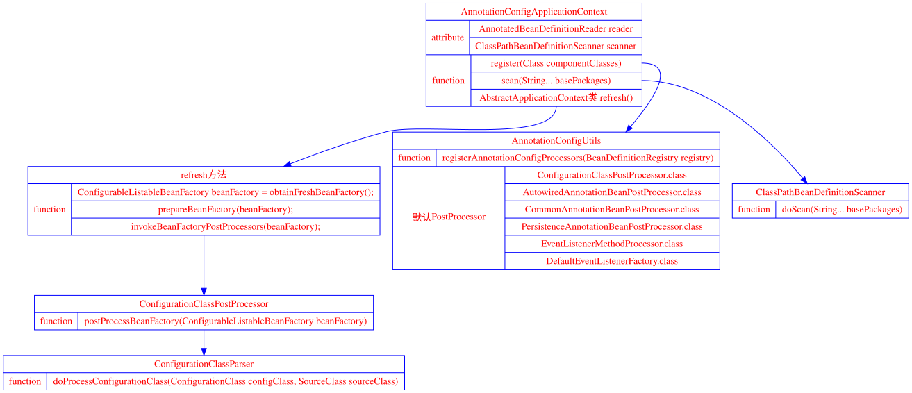
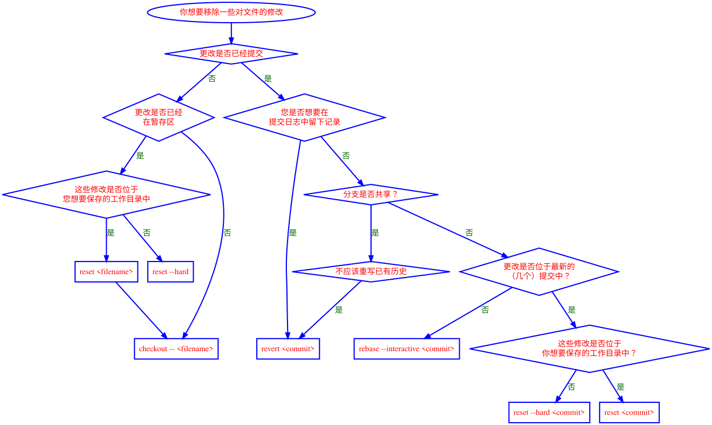

组合设计模式
享元设计模式
适配器模式
工厂模式
装饰者模式
hashmap深入分析
hashmap底层数据结构

PUT方法

1 | public V put(K key, V value) { |
git命令
git命令
git revert 流程

git 基本命令
- 在现有目录中初始化仓库
git init - 如果你是在一个已经存在文件的文件夹（而不是空文件夹）中初始化 Git 仓库来进行版本控制的话，你应该开始跟踪这些文件并提交。 你可通过
git add命令来实现对指定文件的跟踪，然后执行git commit提交 - Git 克隆的是该 Git 仓库服务器上的几乎所有数据，而不是仅仅复制完成你的工作所需要文件。 当你执行
git clone命令的时候，默认配置下远程 Git 仓库中的每一个文件的每一个版本都将被拉取下来。 - 检查当前文件状态
git status - 跟踪新文件
git add README - 暂存已修改文件
git add README - 状态简览
git status -s或者git status --short - 忽略文件
cat .gitignore - 工作目录中当前文件和暂存区域快照之间的差异， 也就是修改之后还没有暂存起来的变化内容
git diff - 若要查看已暂存的将要添加到下次提交里的内容，可以用 git
diff --cached或git diff --staged - 提交更新
git commit - Git 提供了一个跳过使用暂存区域的方式， 只要在提交的时候，给 git commit 加上 -a 选项，Git 就会自动把所有已经跟踪过的文件暂存起来一并提交，从而跳过 git add 步骤
- 移除文件
git rm - 我们想把文件从 Git 仓库中删除（亦即从暂存区域移除），但仍然希望保留在当前工作目录中。 换句话说，你想让文件保留在磁盘，但是并不想让 Git 继续跟踪。 当你忘记添加 .gitignore 文件，不小心把一个很大的日志文件或一堆 .a 这样的编译生成文件添加到暂存区时，这一做法尤其有用。 为达到这一目的，使用 –cached 选项
git rm --cached README - 移动文件
git mv file_from file_to - 查看提交历史
git log一个常用的选项是 -p，用来显示每次提交的内容差异。 你也可以加上 -2 来仅显示最近两次提交 - 你想看到每次提交的简略的统计信息，你可以使用 –stat 选项
git log --stat - –pretty。 这个选项可以指定使用不同于默认格式的方式展示提交历史。 这个选项有一些内建的子选项供你使用。 比如用 oneline 将每个提交放在一行显示，查看的提交数很大时非常有用
git log --pretty=oneline - format，可以定制要显示的记录格式。 这样的输出对后期提取分析格外有用 — 因为你知道输出的格式不会随着 Git 的更新而发生改变
git log --pretty=format:"%h - %an, %ar : %s" - –graph 结合使用时尤其有用。 这个选项添加了一些 ASCII 字符串来形象地展示你的分支、合并历史
git log --pretty=format:"%h %s" --graph - 按照时间作限制的选项，比如 –since 和 –until 也很有用。 例如，下面的命令列出所有最近两周内的提交：
git log --since=2.weeks - –author 选项显示指定作者的提交，用 –grep 选项搜索提交说明中的关键字。
- 另一个非常有用的筛选选项是 -S，可以列出那些添加或移除了某些字符串的提交。 比如说，你想找出添加或移除了某一个特定函数的引用的提交，你可以这样使用：
git log -Sfunction_name - 来看一个实际的例子，如果要查看 Git 仓库中，2008 年 10 月期间，Junio Hamano 提交的但未合并的测试文件，可以用下面的查询命令：
git log --pretty="%h - %s" --author=gitster --since="2008-10-01" --before="2008-11-01" --no-merges -- t/ - 撤消操作 有时候我们提交完了才发现漏掉了几个文件没有添加，或者提交信息写错了。
git commit --amend - 取消暂存的文件
git reset HEAD CONTRIBUTING.md - 撤消对文件的修改
git checkout -- CONTRIBUTING.md - 如果想查看你已经配置的远程仓库服务器，可以运行
git remote命令 - 你也可以指定选项 -v
git remote -v，会显示需要读写远程仓库使用的 Git 保存的简写与其对应的 URL。 - 添加远程仓库
git remote add <shortname> <url>添加一个新的远程 Git 仓库，同时指定一个你可以轻松引用的简写 - 从远程仓库中抓取与拉取
git fetch [remote-name] - 运行
git pull通常会从最初克隆的服务器上抓取数据并自动尝试合并到当前所在的分支。 - 推送到远程仓库
git push [remote-name] [branch-name] - 查看某个远程仓库 可以使用
git remote show [remote-name]命令 - 远程仓库的移除与重命名
git remote rename去修改一个远程仓库的简写名git remote rm移除一个远程仓库 - 列出标签
git tag - 附注标签 创建标签 在 Git 中创建一个附注标签是很简单的。 最简单的方式是当你在运行 tag 命令时指定 -a 选项：
git tag -a v1.4 -m "my version 1.4" - 附注标签 通过使用 git show 命令可以看到标签信息与对应的提交信息：
git show v1.4 - 轻量标签 创建轻量标签，不需要使用 -a、-s 或 -m 选项，只需要提供标签名字
git tag v1.4-lwgit show v1.4-lw - 后期打标签
git tag -a v1.2 9fceb02 - 共享标签 在创建完标签后你必须显式地推送标签到共享服务器上。 这个过程就像共享远程分支一样——你可以运行
git push origin [tagname] - 如果想要一次性推送很多标签，也可以使用带有 –tags 选项的 git push 命令。 这将会把所有不在远程仓库服务器上的标签全部传送到那里。
git push origin --tags - 删除标签 要删除掉你本地仓库上的标签，可以使用命令
git tag -d <tagname>应该注意的是上述命令并不会从任何远程仓库中移除这个标签，你必须使用git push <remote> :refs/tags/<tagname>来更新你的远程仓库：git push origin :refs/tags/v1.4-lw - 检出标签 如果你想查看某个标签所指向的文件版本，可以使用 git checkout 命令
git checkout 2.0.0